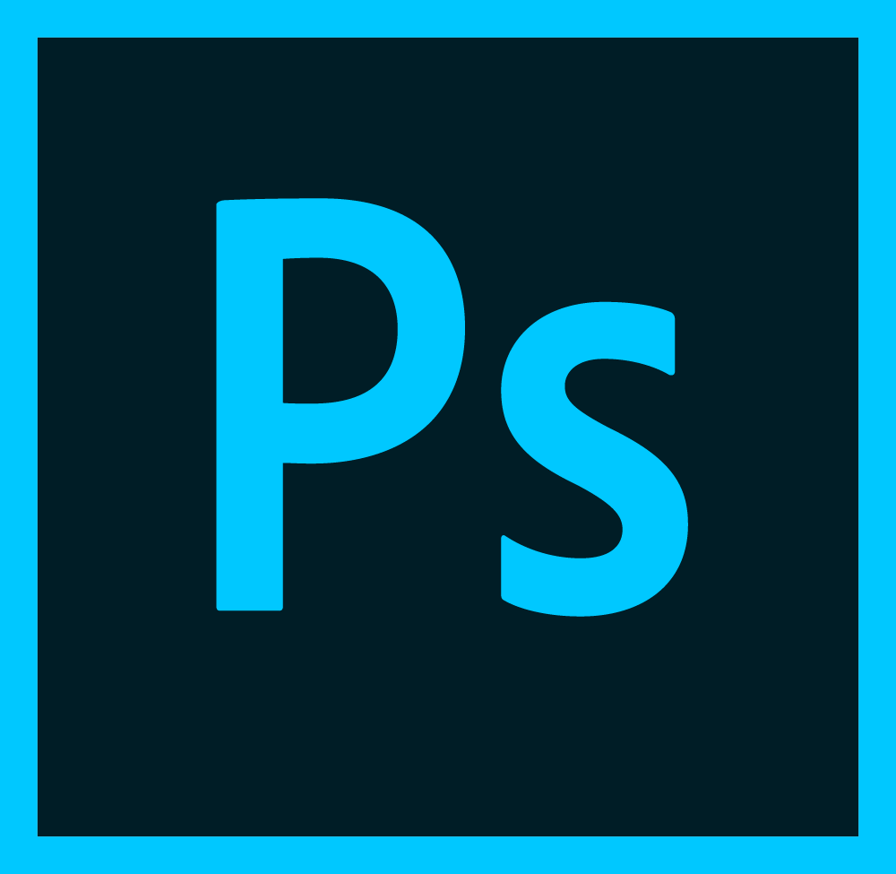
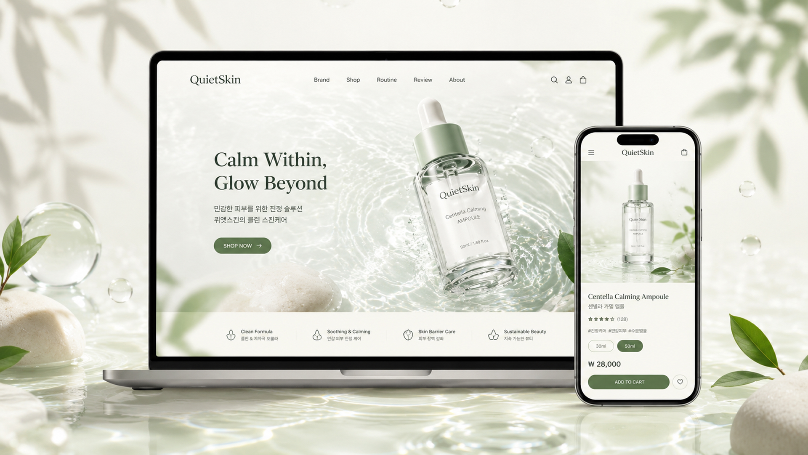

브랜드의 가치보다 제품 판매에 집중되어, 다른 쇼핑몰과 구분되는 경험을 주지 못했습니다.
Cosmetic Brand Experience · UIUX
피부를 위한 쉼의 시간,
브랜드로 경험하다
QuietSkin은 빠르고 자극적인 뷰티 시장 속에서 피부 본연의 균형과 휴식에 주목한 스킨케어 브랜드 컨셉 프로젝트입니다. 단순한 제품 판매를 넘어, 사용자가 브랜드 철학을 자연스럽게 경험하고 탐색부터 구매까지 편안하게 이어지는 온라인 경험을 설계했습니다.

사용 툴
- Figma

Photoshop- Illustrator
- HTML
- CSS
- JavaScript
- AI 이미지 생성
Background & Problem
왜 만들게 되었을까
기존 화장품 쇼핑몰은 할인과 판매 중심 콘텐츠가 많아 브랜드의 가치와 철학을 충분히 전하지 못했습니다. 특히 스킨케어는 사용자의 피부 고민과 라이프스타일에 대한 공감이 중요한데도, 제품 나열에 머무는 경우가 많았습니다. QuietSkin은 사용자가 브랜드 철학을 먼저 경험하고 자연스럽게 제품을 탐색하는 흐름을 제안합니다.
수많은 이벤트와 프로모션이 한꺼번에 노출돼, 정작 필요한 정보를 찾기 어려웠습니다.
브랜드가 전하려는 메시지가 화면과 콘텐츠에 충분히 녹아들지 못했습니다.
Project Goal
브랜드를 먼저 경험하게,
구매까지 편안하게
기능을 늘리기보다 브랜드 철학이 자연스럽게 전해지고, 탐색에서 구매까지 막힘 없이 이어지는 흐름을 만드는 데 집중했습니다.
철학이 전해지는 경험
브랜드 메시지를 콘텐츠 전면에 두어 자연스럽게 닿게 합니다.
편안한 구매 흐름
탐색부터 결제까지 끊김 없이 이어지는 사용자 흐름을 구축합니다.
공감하는 콘텐츠
피부 고민과 라이프스타일에 공감하는 이야기를 담습니다.
신뢰감 있는 분위기
차분하고 정돈된 톤으로 믿음이 가는 브랜드 이미지를 만듭니다.
Problem Solving Insight
문제를 분위기로 바꾸기
판매 중심의 화면을 브랜드 스토리 중심으로 재구성했습니다. 문제를 정리하고, 그에 맞는 해결 방향을 화면 언어로 옮겼습니다.
Problem
- 판매 중심의 화면 구성
- 브랜드 스토리 전달 부족
- 정보 과잉으로 인한 피로감
- 감성적 경험의 부족
Solution
브랜드 스토리 강화
‘피부도 쉬어야 한다’는 메시지를 중심으로 브랜드 철학을 주요 콘텐츠로 배치했습니다.
콘텐츠 중심 탐색 구조
카테고리뿐 아니라 루틴·리뷰·브랜드 스토리를 통해 자연스럽게 제품을 발견하게 했습니다.
감성적 비주얼 강화
부드러운 조명, 자연 소재, 여백 중심의 디자인으로 브랜드 정체성을 표현했습니다.
사용자는 제품을 사는 게 아니라,
브랜드의 철학과 감성이 구매 결정에 큰 영향을 준다는 것을 확인했습니다.
“내 피부를 이해해주는 브랜드”를 경험하고 싶어 합니다.
Design System & Development
브랜드를 디지털로 확장하기
브랜드 아이덴티티를 디지털 경험으로 옮기기 위해 디자인 시스템과 실제 구현을 함께 진행했습니다.
Design Principle
- Calm
- Minimal
- Pure
- Trust
Color 탭하면 HEX가 복사돼요
Typography
Pretendard
가나다라마바사 ABCDdefg 0123
차분하고 읽기 편한 본문 서체
UI Component
- Hero Banner
- Product Card
- Brand Story Module
- Routine Guide Card
- Review Card
- Cart UI
- CTA Button
개발 경험
- HTML / CSS 기반 반응형 쇼핑몰 구현
- JavaScript 인터랙션 적용
- Swiper를 활용한 비주얼 슬라이드 구현
- 제품 상세 페이지 · 장바구니 UI 설계
- AI 생성 이미지를 활용한 브랜드 콘텐츠 제작

Project Result
브랜드 철학과 쇼핑 경험을 잇다
QuietSkin은 브랜드 철학과 쇼핑 경험을 자연스럽게 연결하는 온라인 경험을 제안했습니다. 아이덴티티를 UI와 콘텐츠 전반에 일관되게 적용하며 감성적 경험 설계 역량을 넓혔습니다.

- 01브랜드 중심의 쇼핑 경험 구축
- 02반응형 쇼핑몰 구현
- 03콘텐츠 기반 제품 탐색 구조 설계
- 04브랜드 아이덴티티의 디지털 확장
- 05AI 이미지 활용 경험
Review & Learning
좋은 브랜드 경험은 제품을 설명하기보다, 사용자의 감정을 움직이는 것에서 시작된다.
이번 프로젝트로 제품을 파는 것이 아니라 브랜드의 가치와 철학을 경험으로 전달하는 일이 중요하다는 것을 배웠습니다. 사용자가 브랜드를 어떻게 느끼고 기억하는지에 대한 고민은 UI뿐 아니라 콘텐츠 구성과 비주얼 방향까지 영향을 준다는 것을 체감했고, QuietSkin은 브랜드 감성을 디지털 경험으로 구현하며 사용자와 브랜드의 관계를 설계해본 프로젝트였습니다.
라이브 사이트 보기